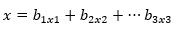
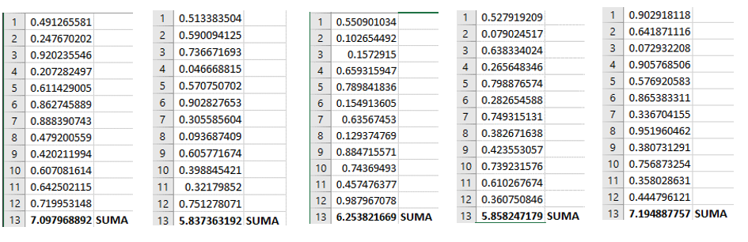

Método De Composición
El método de convolución se pueden usar siempre y cuando la variable aleatoria x se pueda expresar como una combinación lineal de k variables aleatórias:
En este método se necesita generar k números aleatorios (u1,u2,...,uk) para generar (x1,x2,...xk) variables aleatórias usando alguno de los métodos anteriores y así poder obtener un valor de lá variable que se desea obtener por convolución..
1Ejercicio
Los pesos de los soldados presentan una distribución normal de media 65kg y desviación de 8kg. Genere 5 variables aleatorias con esta distribución para simular el proceso de pesaje.
Formula

Donde: σ= Desviación 8kg
µ= Distribución 65kg
- Calculamos 5 veces 12 números aleatorios en excel. 
- Aplicamos la fórmula paso a paso.